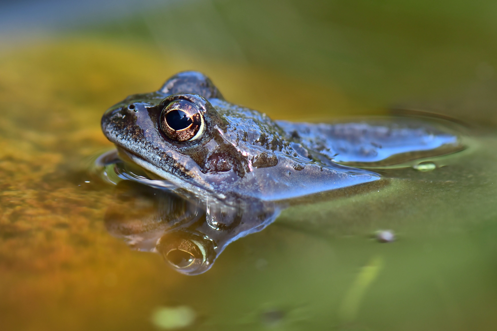

CECILIA
Hábitat
Suelos húmedos y subterráneos.

Características:
Descripción:
Las ranas son un grupo grande y diverso de anfibios carnívoros, con cuerpos cortos y sin colas, que componen el orden Anura (de griego antiguo An = sin + ura = cola). El más fósil antiguo de “proto-rana” apareció a principios del Triásico en Madagascar, pero el reloj molecular sugiere sus orígenes se pueden extenderse hasta más atrás, en la era del Pérmico, hace 265 millones de años.